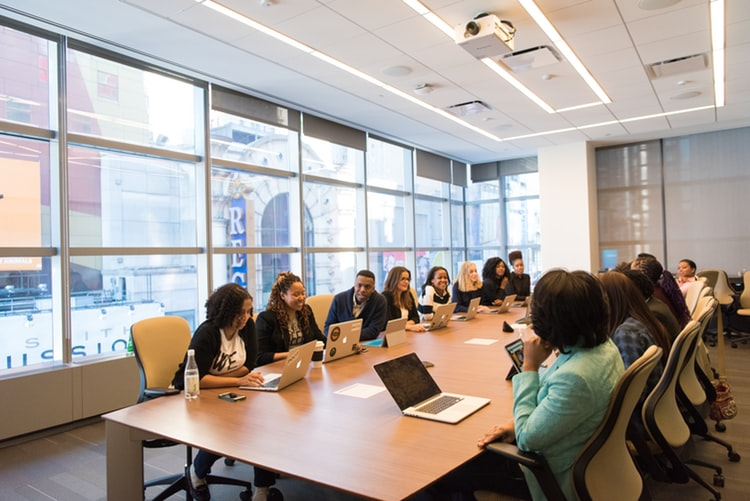

Como evitar a exaustão e manter a equipe criativa e focada
É recorrente observar o sentimento crescente de exaustão nos funcionários, uma situação que só parece ter se intensificado com a pandemia, visto que as diferentes rotinas trouxeram a tona exigências angustiantes, bem como cuidados constantes, nos ambientes de trabalho.
Assim, para evitar a exaustão, e manter a equipe de trabalho criativa e focada, diversas estratégias podem ser
pensadas e implementadas. Dentre elas, podemos destacar a importância de aprender a delegar tarefas, visto que a
grande causa de cansaço no trabalho ocorre devido a sobrecarga de funções.
Bem como a estratégia anterior, analisar a comunicação no ambiente empregatício também é primordial, visto que ela garante o alcance de objetivos institucionais e proporciona ao colaborador um espaço seguro para expressar preocupações ou indicar soluções assertivas, o que auxilia na melhoria do clima organizacional, e da empresa.
Por fim, podemos destacar como estratégias o planejamento de tempo, a disponibilidade de descanso aos colaboradores e a celebração de conquistas, que, mesmo sendo métodos menos usuais, se fazem necessários no cotidiano de uma empresa, colaborando na sensação de bem-estar dos funcionários e tornando o clima da instituição mais dinâmico e leve, proporcionando um aumento na criatividade.